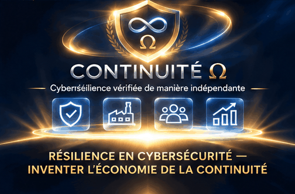

FRANÇAIS · ADAPTATION GÉNÉRÉE
Ascension
Un emblème se forme au-dessus de la Terre, puis apparaissent les personnes, les moyens productifs et les institutions qu’exigerait un service de continuité.

Lire la transcription complète
- Le contour d’un bouclier apparaît au-dessus de la Terre. Aucun texte.
- Le symbole de l’infini apparaît dans le bouclier. Aucun texte.
- Le symbole oméga complète le bouclier. Aucun texte.
- La marque « CONTINUITÉ Ω » apparaît.
- Le sous-titre apparaît : « Cyberrésilience vérifiée de manière indépendante ».
- Trois icônes apparaissent sous la marque et le sous-titre : un bouclier coché, une usine et des personnes.
- Une icône de croissance rejoint les trois icônes existantes. La marque et le sous-titre restent affichés.
- Le descripteur final apparaît : « RÉSILIENCE EN CYBERSÉCURITÉ — INVENTER L’ÉCONOMIE DE LA CONTINUITÉ ».
- L’emblème complet, les quatre icônes et le descripteur restent dans la composition finale.